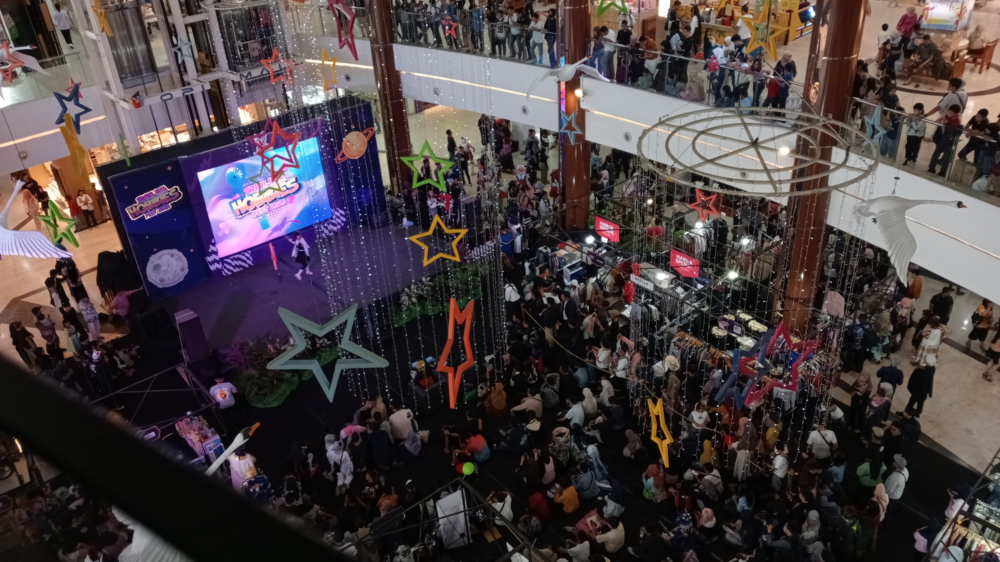

Sriwijaya Hobbies Fest 2025 digelar di Opi Mall, Palembang,
Sumatera Selatan.
Minggu, 28 September 2025, 13:22
Source: Dokumen pribadi
Pada hari ini, di gelar event "Hobby Fest Cosplay Competition 2025".
Sekitar 14.00 WIB, area The Atrium Opi Mall tampak ramai dipadati pengunjung
dari berbagai kelompok usia, mulai dari anak-anak hingga orang dewasa.
Beberapa pasangan keluarga juga datang sembari mendorong stroller bayi mereka.
Cosplay adalah salah satu kegiatan yang kerap dilakukan oleh para pencinta anime
hingga manga Jepang untuk berdandan sesuai tokoh favoritnya.Cosplay adalah salah
satu kegiatan yang kerap dilakukan oleh para pencinta anime hingga manga Jepang
untuk berdandan sesuai tokoh favoritnya.
Mengutip dari buku Komunikasi Budaya dan Kontemporer, Moh Faidol Juddi (2019:124),
inti dari kegiatan cosplay adalah perubahan penampilan menjadi orang lain. Ada
beberapa cosplay yang bisa dikenal, seperti cosplay anime atau manga, cosplay game,
cosplay tokusatsu, cosplay gothic, cosplay lolita, cosplay original, hingga original
schoolgirl-uniform fashion.
Potret Pengunjung event, Source: Dokumen pribadi
“Di sini jual gantungan kunci, action figure, baju, dan banyak lagi” kata Ridho,
salah satu Pengujung event. Menurut dia, para pengujung sudah meramaikan
event ini sejak dibuka pada 13.00 WIB.